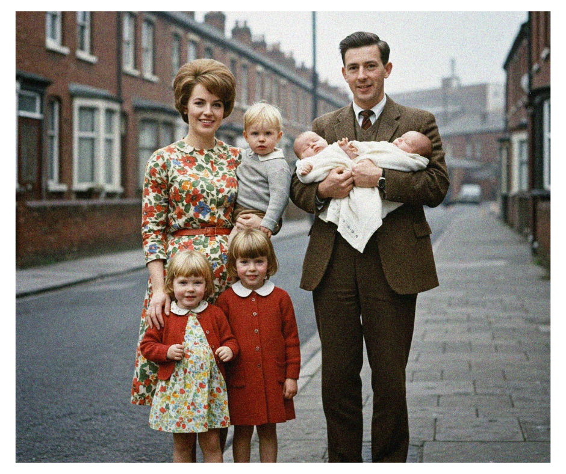
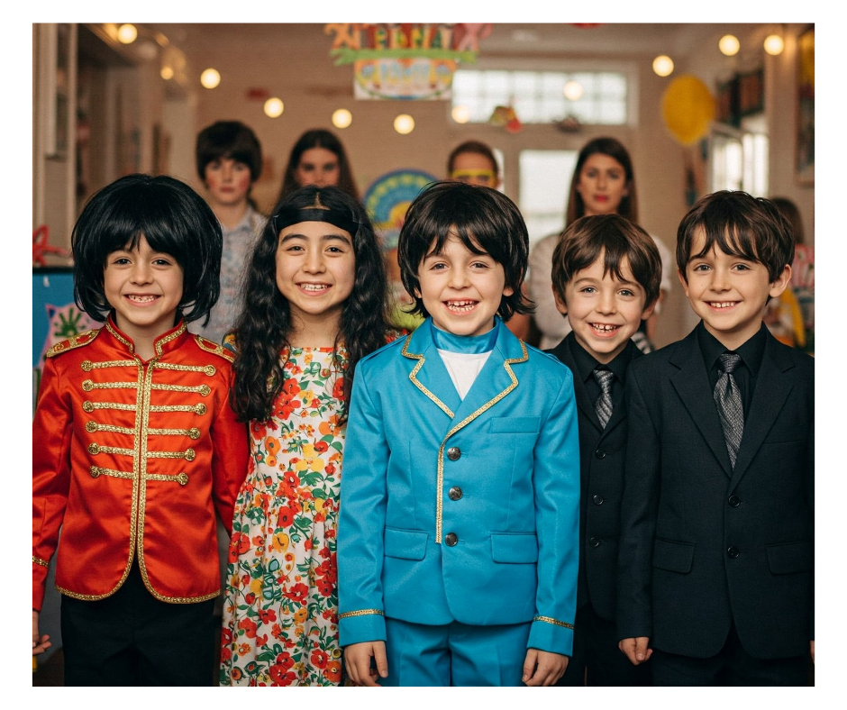

Hey Jude, Don't Make it Bad... Name Your Baby Something Fab! A Beatles Name Deep Dive
If there’s one band that soundtracked the world, it’s The Beatles. From Liverpool to Rishikesh, their music crossed continents and generations. And woven into that iconic tapestry of sound? Names! Lots of them. We're talking about girls, guys, places, pets, and even maybe a Maharishi or two.
The Fab Four weren't just musical geniuses; they were storytellers. And what's a good story without memorable characters? Sometimes they reached out directly to you, the listener, making songs feel incredibly personal. But other times, they got specific, dropping names that sparked curiosity, tugged at heartstrings, or just sounded right.
So, grab your headphones, maybe a cup of tea, and let’s take a magical mystery tour through the names immortalized in Beatles songs. Who were these people (and pets!), and did their fame in vinyl translate to bumps on the baby name charts? Let’s find out!
The Name Game: Who Were They Singing About?
The Beatles' catalogue is peppered with names, each with its own fascinating backstory. Let's meet some of the most memorable characters:
Eleanor Rigby
Ah, poor Eleanor. This haunting 1966 classic paints a picture of profound loneliness...
Lucy (in the Sky with Diamonds)
This 1967 psychedelic swirl from Sgt. Pepper immediately sparked speculation...
Hey Jude
Arguably one of the most beloved Beatles anthems, "Hey Jude" (1968) has a touching origin story...
Michelle
Ooh là là! This romantic ballad from 1965's Rubber Soul oozes Gallic charm...
Martha My Dear
Who was the "silly girl" Paul McCartney was singing to in this cheerful 1968 track...
Dear Prudence
Another White Album gem born from the Beatles' 1968 trip to Rishikesh...
Lovely Rita
This jaunty tune from Sgt. Pepper (1967) features another memorable female character...
Sexy Sadie
Don't let the name fool you – "Sexy Sadie" wasn't about a seductive woman...
Julia
Perhaps the most tender and personal name song, "Julia" (1968) is John Lennon's ode to his mother...
Penny Lane
Not a person, but a place that feels like a character. Released as a double A-side...
Sgt. Pepper
The ultimate conceptual name! For their groundbreaking 1967 album...
And the list goes on! Think of Desmond and Molly Jones...
Did the Beatles Start a Baby Name Boom?
We know the Beatles influenced fashion, music, and culture – but did they influence what people named their babies? It's a fascinating question for us name nerds! Let's look at some of the prominent names and see if their appearance in a hit song coincided with a rise on the baby name charts, particularly in the US and UK around the time of the songs' releases.
| Name | Song Title | Release | Brief Origin/Inspiration | US Trend Around Release | UK Trend Around Release | Beatles Effect? |
|---|---|---|---|---|---|---|
| Michelle | Michelle | 1965 | French feel, Paul's party piece, Jan Vaughan's lyrics | Peaked Top 5 (1968) shortly after song release | Popularized | Strong/Likely |
| Jude | Hey Jude | 1968 | For Julian Lennon during parents' divorce | Jumped 69% in 1969 after #1 single | Boosted | Strong/Likely |
| Eleanor | Eleanor Rigby | 1966 | Actress E. Bron? Shop name? Gravestone coincidence? | Name was declining; song released during dip. Recent resurgence unrelated. | Sometimes seen as dated | Unclear/Minimal |
| Lucy | Lucy in the Sky with Diamonds | 1967 | Julian Lennon's drawing of classmate Lucy O'Donnell | Long-term staple; song released between 19th C peak & late 20th C dip. LSD link? | Popular | Unclear/Minimal |
| Julia | Julia | 1968 | John's mother Julia Lennon; Yoko Ono ("Oceanchild") | Consistently popular; no major spike after song. Major rise later (2001). | Popular | No Obvious Effect |
| Prudence | Dear Prudence | 1968 | Prudence Farrow's intense meditation in India | Remained very rare | Rare | None |
| Rita | Lovely Rita | 1967 | American "meter maid" slang; maybe traffic warden Meta Davies | Likely declining from 1940s peak when song released; fell off Top 1000 later. | Less common now | None/Negative |
| Martha | Martha My Dear | 1968 | Paul's sheepdog Martha; possible Jane Asher subtext | Long, slow decline continued after song release. Seen as dated. | More popular in UK | None |
| Sadie | Sexy Sadie | 1968 | Disillusionment with Maharishi Mahesh Yogi | Song released at name's absolute lowest point. Later resurgence unrelated. | Popular now | None/Negative (Initially?) |
| Penny | Penny Lane | 1967 | Real Liverpool street; diminutive of Penelope | Already popular (Top 100 in 60s); song likely sustained visibility. | Popular | Possible/Sustaining |
Note: Inspirations are based on band members' accounts and common interpretations. Trend data is approximate.
So, what does this tell us? It seems the "Beatles Baby Name Effect" was real, but selective!
- Clear Hits: Names like Michelle and Jude saw significant boosts...
- Minimal Impact: Classic, established names like Eleanor, Lucy, and Julia didn't seem dramatically swayed...
- No Boost for the Declining or Rare: Names already fading like Rita and Martha, weren't revived...
- Negative Connotations Matter: Sadie was at its lowest point...
- Sustaining Power?: For Penny, already popular...
It shows that while a hit song can definitely put a name on the map... Pop culture influence is powerful, but unpredictable!
More Than Just a Name: Why the Beatles' Choices Resonate
Why did the Beatles bother using specific names? ... Their choices show the power a name holds in songwriting.
- Making Feelings Concrete: Abstract ideas like loneliness become instantly relatable...
- Adding Emotional Weight: Knowing the real stories behind "Julia" or "Hey Jude" adds layers...
- Sketching Characters Quickly: Names help bring scenes to life...
- Creating Intrigue and Legend: Names like "Lucy" or "Sexy Sadie" became iconic...
- Sounding Good: Sometimes, it's just about the music!...
The Beatles used names in all these ways... It highlights how versatile and powerful naming is...
Let It Be (Named Something Great!)
From Paul's dog Martha to John's mother Julia... the names in Beatles songs are a rich collection...
Here at The Stork Name Drop, we're fascinated by how names weave themselves into our culture...
Whether you're naming a baby, a pet, or even just a character in a story... The Beatles certainly showed us how much meaning and magic a simple name can hold.
Now over to you! What's your favorite Beatles name song? ... Share your thoughts in the comments below – we'd love to hear your stories!